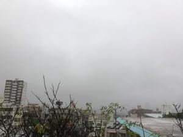
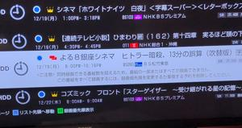

うるがいの話 ある日
最新: 録画予約の失敗【うるがいの話 ある日】とは 一日だけのプログです
『うるがいの話』の最新一日だけのプログで、通信料が少なく経済的だ。カニの画像をクリックすると全ての日付が載る『うるがいの話』サイトを表示します
|
|
【うるがいの話】 うるがい(ｳﾙｶﾞｲ urugai)とは、『もずくがに』の名前でとても大きくなります。 |
|---|---|
|
|
【カミマヤーの話】 猫のことを方言でマヤーといいます。カミマヤー（kamimayaa）とは、神の猫のことです。 |
|
【たながぁの音楽】 たながぁ（ﾀﾅｶﾞｰ tanagaa）とは手長えびのことで、何種類かあり大きいのは車 エビぐらいになります。 |

|
【ぶながぁの話】 ぶながぁ(ﾌﾞﾅｶﾞｰ bunagaa)とは、赤い髪の毛、赤い身体、そして身長は１ｍ２０ｃｍ ぐらい、川の蟹を食べているの目撃された。場所は沖縄県国頭郡大宜味村のと ある村僕の隣近所に住んでいる爺さんから、聞いた話です。 |
|
|
【ギーマの話】 ギーマ(giima)とは、山原の里山に咲くスズランに似た、 花を付けます。実は食べられます、 気が付くと口の周りが紫になっています。 |
2022年12月17日 (土）録画予約の失敗
15:50
 
昨日、録画していた映画『ラウンターズ』を見る、が、悲しいことに最後のク
ライマックスの場面で、録画が終わっている！。仕方ないと、子供達が提供し
てくれている『アマゾンプライム』や『ネットフリックス』を検索すると有料
になっている。ケっ、お金出してもと諦める。一月前にも、映画『ビッグ・フ
ィッシュ』でも同じ経験をする。さすがに３度目は・・・、と真面目に調べて
みた。予約リストで映画の予約を確認してみると
<ご注意>
同時録画できる番組数を超えるため、
番組の一部またはすべてが録画できません。
この番組をすべて録画するには、
録画優先順を変更するか重複する予約を削除してください。
おお、重なっている番組はどれだと調べた。『コズミック フロント』だ、総
合と４Ｋの二つの予約が、映画と重なっていたのだ。そして、少し、放送時間
が少し遅い４Ｋの開始時間で、映画の放送が打ち切られいた。総合の予約を取
り消す、１度目で対策を放置しなかったら良かったのに、これで３回目は無い
筈だ。
おとといの庭仕事のせいか右の腰の痛みがあったのだが、昨日、昼寝していた
ら治っている。その代わり、右目の少し血の塊がある。ほうほう、今度は目か
と思っていたら、今朝は、右目の半分が真っ赤に！（球結膜下出血）、昨日も
遅くまで楽譜ソフトをいじっていたから？。久々に自分のユーチューブ動画を
見るとチャンネル登録が一つ増えて５になっていた。少し、元気になる。昼３
時頃、ジョギングしようと外に出ようとすると雨が・・、今日も諦める。
１５時４３分 ビットコインの総資産 ￥６、６３１（↓３４３）